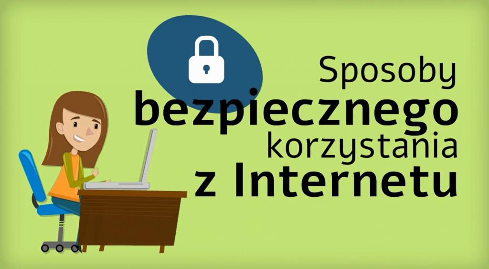
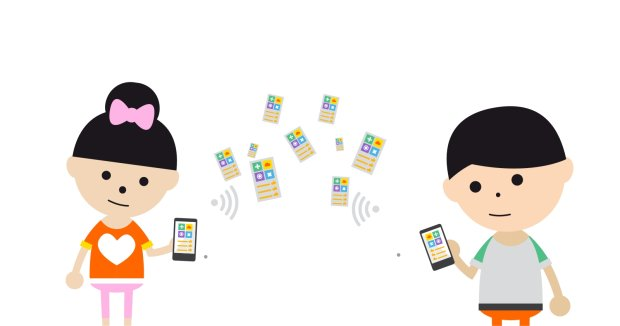
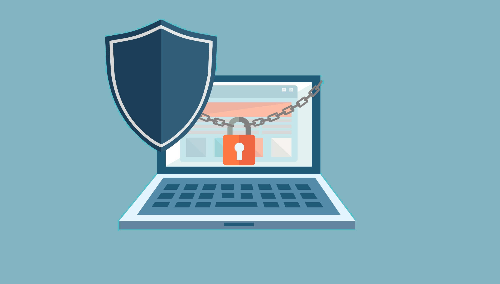

Na tej stronie znajdziesz 10 zasad bezpiecznego korzystania z internetu!



Na tej stronie znajdziesz 10 zasad bezpiecznego korzystania z internetu!
Bezpieczeñstwo w sieci! 1. Korzystaj z oprogramowania antywirusowego oraz aktualizuj oprogramowanie systemu, 2. Otwieraj wiadomoœci tylko od znajomych osób, 3. Ostro¿nie pobieraj pliki z sieci oraz nie otwieraj nieznanych plików, 4. Unikaj klikania w nieznane linki i za³¹czniki w wiadomoœciach e-mail, 5. Nie podawaj w sieci danych osobowych ani hase³, nie wysy³aj swoich zdjêæ, 6. Chroñ swoje konta na serwisach spo³ecznoœciowych, 7. Stosuj trudne do odgadniêcia has³a, które s¹ kombinacj¹ liter i cyfr, 8. Czytaj regulaminy, 9. Sprawdzaj, czy strona, do której siê logujesz, ma zabezpieczenie SSL lub https, 10. Pamiêtaj, ¿e osoba po drugiej stronie nie musi byæ tym, za kogo siê podaje.